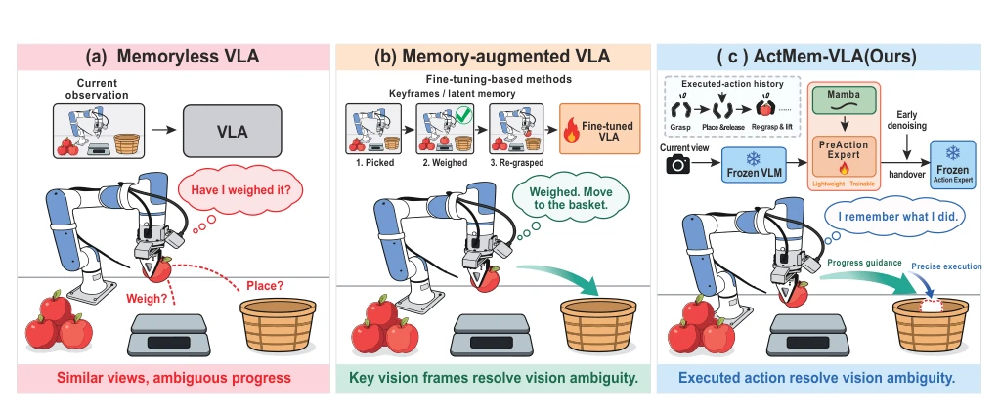
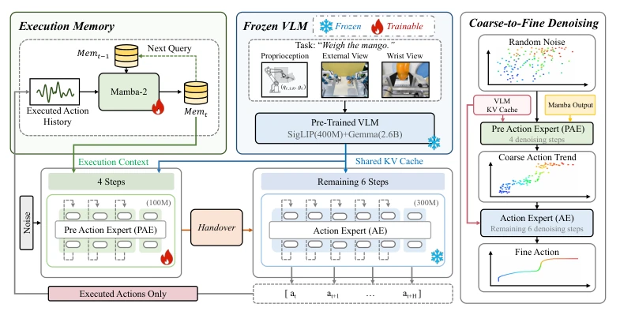
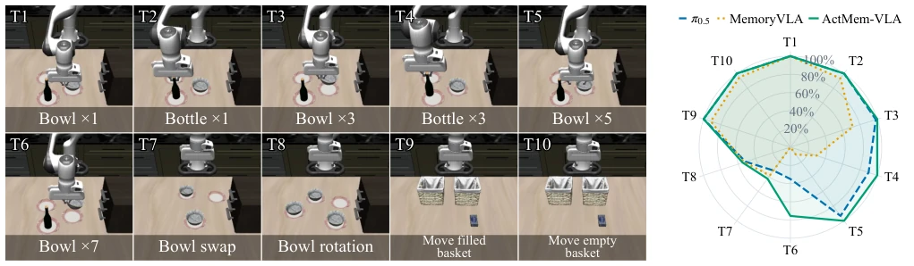
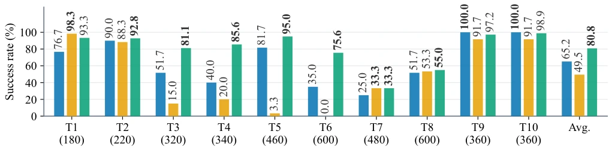
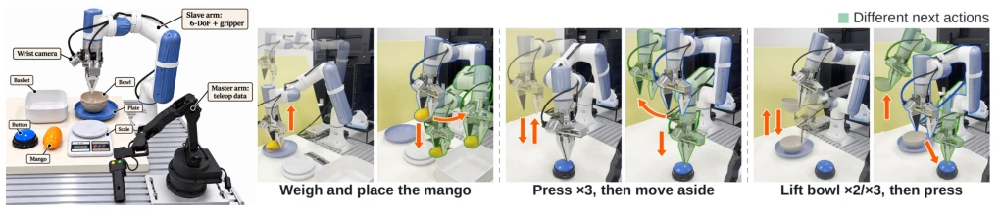

This paper provides a "memory offload" for VLA models in long-horizon tasks. The core idea is straightforward: since the current frame cannot distinguish stages, look at what was done before. ActMem-VLA did not modify the frozen base VLA, but instead introduced a lightweight PreAction Expert responsible for early denoising, using Mamba to encode action history to "guide the way", and finally returning the intermediate results to the frozen Action Expert for refinement. This "dual expert handover" strategy indeed saves parameters, adding only 3.45% trainable weights, which is much smarter than full fine-tuning. However, betting all hopes on "action history", what if the action itself has noise? Moreover, although Mamba is fast, whether its expressive power in processing long-sequence actions is sufficient to replace visual memory remains a question. Overall, this is a very elegant engineering "patch" that solves perceptual ambiguity, but does not solve the lack of world understanding inherent in VLA itself, belonging to a victory of the pragmatic school.
In long-horizon manipulation tasks, robots often fall into the "déjà vu" trap: similar visual states appear at different stages, yet opposite actions are required. For example, weighing an apple, holding it on the scale could be "put down" or "pick up". Existing memoryless VLA (such as π0.5 [4]) rely only on current observations, easily confusing task progress, leading to repeated actions or getting stuck. Although some methods introduce historical context, directly stacking multi-frame visual data has high computational redundancy [7], and memory modules based on feature fine-tuning (such as MemoryVLA [22]) require joint training of policy networks, with high costs and damaging base generalization. This paper aims to solve the perceptual aliasing problem while avoiding expensive full fine-tuning, achieving parameter-efficient temporal adaptation by separating historical condition guidance and policy refinement, allowing existing VLA to "remember" what it has done.

Fig. 1. Motivation: similar observations can require different actions depending on task progress. In the apple-weighing task, holding the apple above the scale occurs both before weighing and after re-grasping, despite requiring different subsequent actions. (a) A memoryless VLA lacks the history needed to distinguish these stages. (b) Representative memory-augmented approaches that fine-tune the base VLA incorporate historical context to resolve the ambiguity. (c) ActMem-VLA instead uses executed-action history as compact progress-aware memory to steer early denoising through a lightweight PreAction Expert, before handing the intermediate action state to the frozen Action Expert for refinement.
ActMem-VLA adopts a dual expert handover architecture, the core of which lies in splitting the denoising process. First, the Mamba-2 module serves as execution memory, encoding the sequence of actions executed in the past s steps into a compact progress context, avoiding redundancy in high-dimensional visual data. During inference, the lightweight PreAction Expert (PAE) receives this memory and current observations, performing early high-noise denoising in the first half of the denoising trajectory (τ∈[0, r)), responsible for guiding macro action trends and correcting task progress. Subsequently, the intermediate state is directly handed over to the frozen Action Expert (AE), which completes the remaining low-noise steps (τ∈[r, 1]) to refine action details and ensure execution accuracy. During training, only Mamba and PAE are optimized, while the base VLM and AE remain frozen. This design decouples historical perception into trainable guidance and frozen refinement, preserving the base policy's fine-grained control capability while injecting temporal memory via lightweight plugins, achieving parameter-efficient long-horizon task adaptation without retraining expensive base models.

Fig. 2. Overview of ActMem-VLA. The Execution Memory module encodes previously executed actions into a compact execution context. Conditioned on this context and the current observation, the PreAction Expert performs early, high-noise denoising. The partially denoised action state is then handed to the frozen Action Expert, which performs the remaining low-noise steps to produce the action chunk. It is noted that only Mamba and the lightweight PreAction Expert are optimized; the base VLM and original Action Expert remain frozen.
On the 10 tasks of the LIBERO-Mem simulation benchmark, ActMem-VLA achieved an average success rate of 80.8%, significantly outperforming π0.5 (65.2%) and MemoryVLA (49.5%), with obvious advantages especially on repetitive tasks T3-T6. In 4 real-world tasks, compared to π0.5, an average improvement of 28.8% was achieved, among which the "weighing mango" task jumped from 10% to 65%, proving its effectiveness in distinguishing different stages under similar visual states. Ablation studies show that removing execution memory or PAE both lead to performance degradation, especially on the repetitive tracking task T6. Hyperparameter analysis indicates that the handover point r=0.4 and PAE depth of 4 layers yield the best results. Results confirm that the architecture is robust in solving perceptual aliasing and task progress tracking, and can be deployed without retraining the base model.

Fig. 3. Left: Ten simulation tasks in LIBERO-Mem. Right: Success rates of different methods across these tasks.

Fig. 4. Simulation comparison results on LIBERO-Mem. Success rates under task-specific step limits on T1-T10. The number in parentheses below each task indicates the step limit. Episodes that do not complete the task within this limit are counted as failures.

Fig. 5. Overview of the hardware setup and representative execution sequences for the four real-world evaluation tasks.